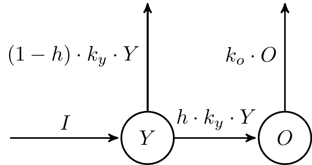
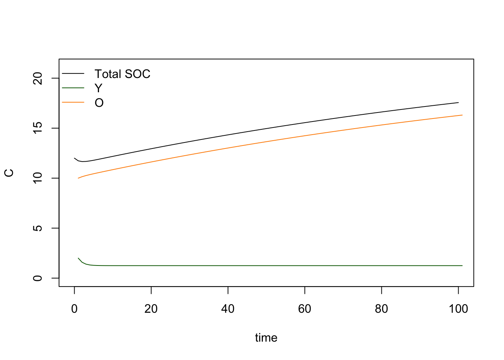
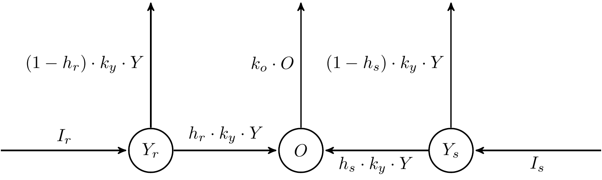

This is a very flexible approach for anyone who knows already some R basics because it allows us to build a model (any linear model, and to some extent also nonlinear) just by defining it as an ODE system.
An ODE system is quite easy conceptually, particularly when compared to its analytical solution over time. This allows you to easily modify your models, adding or taking out terms depending on the hypotheses you want to represent.
We have seen this already but as a reminder here it is the model we want to implement: \[ \frac{dY_{(t)}}{dt}=I - k_y \cdot r \cdot Y \\ \frac{dO_{(t)}}{dt}= h \cdot k_y \cdot r \cdot Y - k_o \cdot r \cdot O \]
Which can be conceptually visualized like this: 
library(deSolve)This loads a pretty standard ODE solver library, which contains
various numerical methods we are not going to dig into now.
it is enough to know that it calculates the solution with numerical
optimization (which is not exact but an approximation, so your results
may vary ever so slightly depending on the seeds you set in R or on the
different executions. It is a minimal variation anyway you can
neglect).
##function (differential form)
ODEfun <- function(time=seq(1:times_range), state=state,
parms=parms) {
with(as.list(c(state, parms)), {
.Y=I-ky*r*Y
.O=h*ky*r*Y-ko*r*O
return(list(c(.Y, .O)))
})
}The order of the results will be the one specified in the output
(return(list(..., ..., ...))).
We need to define the initial state of the system. This is a vector containing one entry for each of the variables defined in the ODE, and the order should match.
init=c(Y=2, O=10)We then define all our model parameters (constants)
parameters=c(ky=0.8, ko=0.0065, h=0.15, r=1, I=1)And we specify the time vector for the solution. The time steps can be arbitraru big or small, not necessarily 1. The time unit is defined by the model (a certain parameterization will be in a specific time unit)
time_vector=seq(0,100)We can now run our solver to find the integrated solution over time:
simulation <- ode(y = init, time = time_vector, func = ODEfun,
parms = parameters)
total_SOC=simulation[,2]+simulation[,3]We have now a data frame with three columns, the first is time and the others are the solutions of our ODE in the order specified in the model definition. We can sum up the two pools to find the total SOC
total_SOC=simulation[,2]+simulation[,3]
For example, what if you wanted to modify the model adding one specific Y pool for roots and one for shoots?

You can then just define the model as an ODE system: \[ \frac{dY_{r,}}{dt}= I_r - k_y \cdot r \cdot Y \\ \frac{dY_{s}}{dt}= I_s - k_y \cdot r \cdot Y \\ \] We then have to define these fluxes into the O pool as a sum: \[ \frac{dO}{dt}= h_r \cdot k_y \cdot r \cdot Y_r + h_s \cdot k_y \cdot r \cdot Y_s - k_o \cdot r \cdot O \] And now we are ready to write this system into the solver, and then we have our model.
This is just an example. We assumed, among many other things, that
the two Y pools decay at the same constant rate
k_y, but this is not necessarily the case, it all depends
on the hypothesis you want to test.
You can think to virtually any hypothesis (provided it is fitting a
compartmental linear model definition) and represent it with an ODE. And
you can also go further (like nonlinear hypotheses) since
deSolve also solves PDE systems, I would just not go there
without knowing what you are doing in terms of the properties of the
model object you are creating…